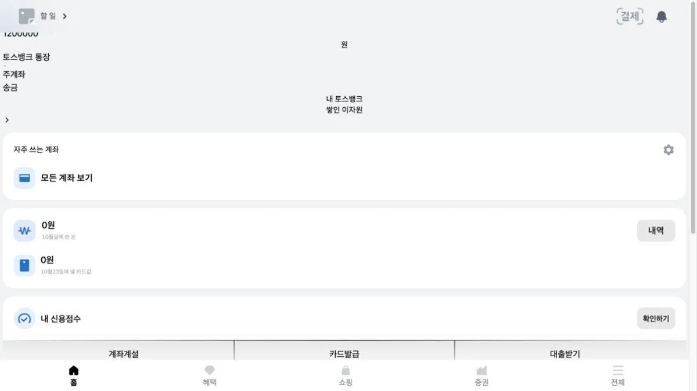

PERSONAL PROJECT · LEARNING CLONE
Toss Clone
모바일 금융 UI를 재현하며 상태 관리와 실시간 시세를 연결한 학습 프로젝트
역할 개인 프로젝트 · 화면 구성 및 프론트엔드 기능 구현

OVERVIEW
모바일 화면 재현을 넘어
상태와 실시간 데이터까지
토스 앱의 UI와 주요 흐름을 React로 재현한 개인 학습 프로젝트입니다. 홈·혜택·쇼핑·증권 화면과 함께 계좌 상태, 거래 내역, 시세 데이터의 흐름을 다뤘습니다.
토스의 공식 서비스가 아니며, 상업적 목적의 프로젝트가 아닙니다. 일부 화면은 Mock 데이터를 사용합니다. 시세 연동 구현에는 생성형 AI의 도움을 받아 코드를 작성했습니다.
01 / STATE MANAGEMENT
계좌와 거래 상태를
화면 밖으로 분리하기
문제
계좌 잔액과 거래 내역은 화면 전환과 관계없이 일관된 상태로 다뤄야 합니다.
선택과 이유
Zustand 저장소에 계좌 정보와 거래 목록, 각 값을 갱신하는 동작을 분리했습니다. 화면 컴포넌트가 상태를 읽는 역할과, 값을 갱신하는 동작을 구분할 수 있는 구조입니다.
현재 구현 결과
계좌 잔액·소유자와 거래 배열을 각각의 저장소에서 관리합니다. 이 구조는 렌더링 성능 개선 수치를 의미하지 않으며, 상태의 위치와 갱신 경로를 명확히 한 구현입니다.
02 / REALTIME CHART
계속 들어오는 시세를
차트에서 다루기
문제
시세가 계속 수신되면 차트에 보관하는 데이터도 끝없이 늘어날 수 있습니다. 종목이 바뀌면 이전 연결도 정리해야 합니다.
선택과 이유
종목별 연결과 시계열 데이터를 Map으로 관리하는 훅을 분리했습니다. 같은 가격이 연속으로 들어오면 새 점을 추가하지 않고, 기본 최대 240개를 넘어선 데이터는 앞에서부터 제거합니다.
현재 구현 결과
각 종목의 차트 데이터 보관량에 상한이 있습니다. 구독에서 빠진 종목과 컴포넌트 정리 시에는 연결을 닫습니다. 가격 키가 다른 응답은 숫자로 변환하고, 유효하지 않은 값은 추가하지 않습니다.
240개는 코드의 기본 보관 상한이며, 측정한 성능 점수나 개선율이 아닙니다.
03 / LOADING & CONNECTION
데이터가 도착하기 전과
연결이 끝나는 순간
홈 화면에는 스켈레톤을 사용하고, 실시간 데이터 훅에서는 타이머와 소켓을 정리합니다. 재연결 로직도 포함되어 있지만, 네트워크 변화에 대한 장시간 안정성 검증은 별도 보완할 부분입니다.
TRY IT ON MOBILE
휴대폰에서 직접 살펴보기
모바일 화면을 기준으로 제작했습니다. PC에서는 실행 화면을 먼저 살펴보고, QR 코드를 스캔하면 휴대폰에서 열 수 있습니다.
Toss Clone 실행하기 ↗API 응답과 외부 서버 상태에 따라 일부 기능이 제한될 수 있습니다.
VERIFICATION / 검증 범위
실시간 구현과
성능·안정성 검증은 별개입니다.
구현 확인 데이터 보관량과 연결 관리
종목별 차트 데이터의 기본 보관 상한은 240개입니다. 같은 가격은 추가하지 않고 종목별 구독과 연결 정리 로직을 두었습니다. 이 사실만으로 렌더링 성능 향상이나 타이머 누수 없음이 검증된 것은 아닙니다.
설계상의 한계 같은 가격을 생략하면 시간도 생략됩니다.
같은 가격의 연속 수신을 건너뛰면 차트에는 가격이 바뀐 시점 중심으로 점이 남습니다. 일정한 시간 간격의 가격 추이를 정확하게 표현해야 한다면, 같은 가격도 시간에 맞춰 기록하거나 별도로 시간 단위로 집계하는 방식이 필요합니다.
현재 방식을 일반적인 시계열 표현의 정답이나 측정된 최적화로 소개하지 않습니다. 수신 데이터와 차트가 표현해야 할 시간 간격을 비교한 뒤 개선할 항목입니다.
실패 상황별 검증 계획 보기
- 네트워크 단절·복구 — 재연결 횟수, 동시에 열린 연결 수, 재시도 타이머의 잔존 여부 확인
- 빠른 종목 전환 — 이전 종목의 늦은 응답이 새 종목 데이터에 섞이지 않는지 확인
- 반복 진입·이탈 — 화면을 닫은 뒤 소켓·이벤트·타이머가 정리되는지 확인
- 잘못된 메시지 — JSON 오류, 누락된 가격, 숫자가 아닌 값, 잘못된 시간에 대한 처리 확인
- 늦거나 역순인 응답 — 시계열 정렬과 오래된 데이터 처리 기준 확인
위 항목은 수행 완료한 테스트 결과가 아니라 다음 검증 대상입니다. 자동화된 회귀 테스트와 장시간 연결 검증은 아직 추가 과제입니다.
성능 측정·개선 기록 계획 보기
같은 종목·수신 빈도·실행 시간·기기 조건을 고정하고, 초당 메시지 수와 화면 업데이트 수, React 렌더링 시간, 메모리 변화를 측정할 계획입니다.
같은 가격 포함 여부와 데이터 보관 상한을 비교하고, 병목이 확인된 경우에만 업데이트 묶기나 렌더링 조정을 적용합니다. 측정 조건·수정 전후 값·차트의 시간 표현 변화까지 함께 기록할 예정입니다.
현재 공개할 수 있는 측정 결과와 개선율은 없습니다.
NEXT STEPS
실시간 데이터 처리의
깊이를 보완하는 프로젝트
GITERVIEW가 계정·요청 상태와 서비스 흐름을 보여준다면, Toss Clone은 상태 저장소와 실시간 데이터 처리의 구현을 보여줍니다. 다음 보강은 파싱·연결 정리 테스트, 실패 상황 재현, 성능 측정입니다. 접근성과 리스트 가상화도 완료한 구현으로 표기하지 않습니다.